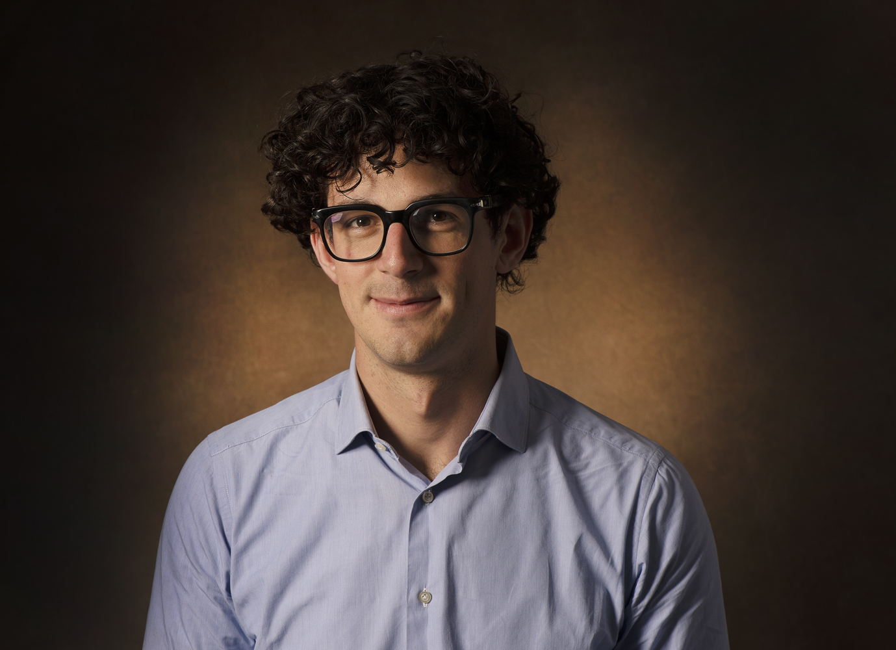

Welcome! I am a second-year PhD candidate in Economics at Erasmus University Rotterdam. My supervisors are Georg Granic and Matthijs van Veelen.
My research is in behavioral and experimental economics. I am interested in social preferences and how they relate to cognition and evolution.
Email: bassi@ese.eur.nl
CV: pdf
Work in progress
Erasmus University Rotterdam, 2026-2027
Last updated: October 2026